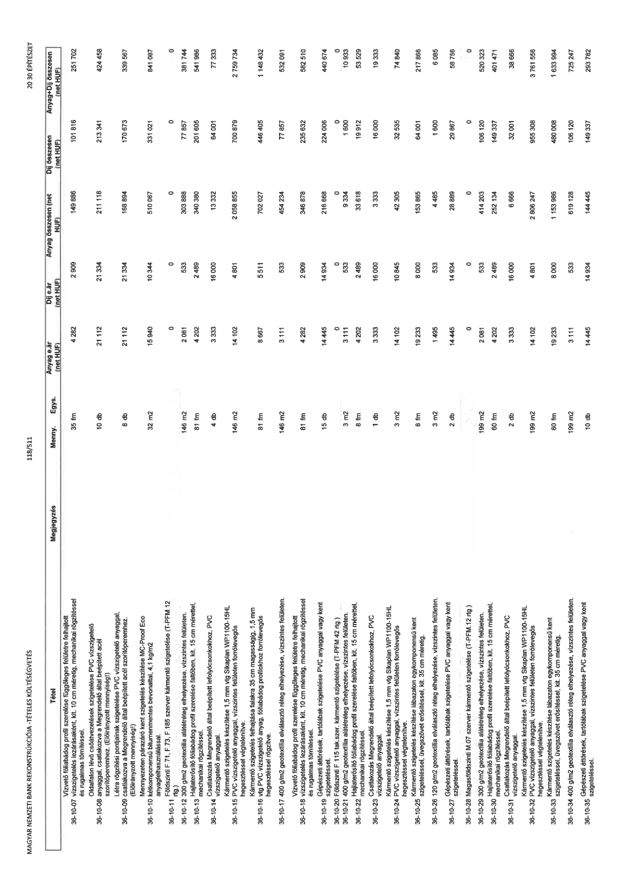

| Tétel | Megjegyzés | Menny. | Egys. | Anyag e.ár (net HUF) | Díj e.ár (net HUF) | Anyag összesen (net HUF) | Díj összesen (net HUF) | Anyag+Díj összesen (net HUF) |
|---|---|---|---|---|---|---|---|---|
| 36-10-07 Vízvető fóliabádog profil szerelése függőleges felületre felhajtott vízszigetelés lezárásaként, kit. 10 cm mérettől, mechanikai rögzítéssel és rugalmas tömítéssel. | NaN | 35 | fm | 4 282 | 2 909 | 149 886 | 101 816 | 251 702 |
| 36-10-08 Oldalfalon lévő csőátvezetések szigetelése PVC vízszigetelő anyaggal, csatlakozva a Megrendelő által beépített acél szorítóperemhez. (Előirányzott mennyiség!) | NaN | 10 | db | 21 112 | 21 334 | 211 118 | 213 341 | 424 458 |
| 36-10-09 Létra rögzítési pontjainak szigetelése PVC vízszigetelő anyaggal, csatlakozva a Megrendelő által beépített acél szorítóperemhez. (Előirányzott mennyiség!) | NaN | 8 | db | 21 112 | 21 334 | 168 894 | 170 673 | 339 567 |
| 36-10-10 Mennyezeten párazáró kent szigetelés készítése MC-Proof Eco kétkomponensű bitumenmentes bevonattal, 4,1 kg/m2 anyagfelhasználással. | NaN | 32 | m2 | 15 940 | 10 344 | 510 067 | 331 021 | 841 087 |
| 36-10-11 Földszinti F 71, F 73, F 185 szerver kármentő szigetelése (T-PFM 12 rtg.) | NaN | 0 | - | 0 | 0 | 0 | 0 | 0 |
| 36-10-12 300 g/m2 geotextília alátétréteg elhelyezése, vízszintes felületen. | NaN | 146 | m2 | 2 081 | 533 | 303 888 | 77 857 | 381 744 |
| 36-10-13 Hajlaterősítő fóliabádog profil szerelése falitőben, kit. 15 cm mérettel, mechanikai rögzítéssel. | NaN | 81 | fm | 4 202 | 2 489 | 340 380 | 201 605 | 541 986 |
| 36-10-14 Csatlakozás Megrendelő által beépített lefolyócsonkokhoz, PVC vízszigetelő anyaggal. | NaN | 4 | db | 3 333 | 16 000 | 13 332 | 64 001 | 77 333 |
| 36-10-15 Kármentő szigetelés készítése 1,5 mm vtg Sikaplan WP1100-15HL PVC vízszigetelő anyaggal, vízszintes felületen forrólevegős hegesztéssel végtelenítve. | NaN | 146 | m2 | 14 102 | 4 801 | 2 058 855 | 700 879 | 2 759 734 |
| 36-10-16 Kármentő szigetelés felhajtása falakra 35 cm magasságig, 1,5 mm vtg PVC vízszigetelő anyag, fóliabádog profilokhoz forrólevegős hegesztéssel rögzítve. | NaN | 81 | fm | 8 667 | 5 511 | 702 027 | 446 405 | 1 148 432 |
| 36-10-17 400 g/m2 geotextília elválasztó réteg elhelyezése, vízszintes felületen. | NaN | 146 | m2 | 3 111 | 533 | 454 234 | 77 857 | 532 091 |
| 36-10-18 Vízvető fóliabádog profil szerelése függőleges felületre felhajtott vízszigetelés lezárásaként, kit. 10 cm mérettől, mechanikai rögzítéssel és rugalmas tömítéssel. | NaN | 81 | fm | 4 282 | 2 909 | 346 878 | 224 006 | 582 510 |
| 36-10-19 Gépészeti áttörések, tartólábak szigetelése PVC anyaggal vagy kent szigeteléssel. | NaN | 15 | db | 14 445 | 14 934 | 216 668 | 224 006 | 440 674 |
| 36-10-20 Földszinti F 115 tak.szer. kármentő szigetelése (T-PFM 42 rtg.) | NaN | 0 | - | 0 | 0 | 0 | 0 | 0 |
| 36-10-21 400 g/m2 geotextília alátétréteg elhelyezése, vízszintes felületen. | NaN | 3 | m2 | 3 111 | 533 | 9 334 | 1 600 | 10 933 |
| 36-10-22 Hajlaterősítő fóliabádog profil szerelése falitőben, kit. 15 cm mérettel, mechanikai rögzítéssel. | NaN | 8 | fm | 4 202 | 2 489 | 33 618 | 19 912 | 53 529 |
| 36-10-23 Csatlakozás Megrendelő által beépített lefolyócsonkokhoz, PVC vízszigetelő anyaggal. | NaN | 1 | db | 3 333 | 16 000 | 3 333 | 16 000 | 19 333 |
| 36-10-24 Kármentő szigetelés készítése 1,5 mm vtg Sikaplan WP1100-15HL PVC vízszigetelő anyaggal, vízszintes felületen forrólevegős hegesztéssel végtelenítve. | NaN | 3 | m2 | 14 102 | 10 845 | 42 305 | 32 535 | 74 840 |
| 36-10-25 Kármentő szigetelés készítése lábazaton egykomponensű kent szigeteléssel, üvegszövet erősítéssel, kit. 35 cm méretig. | NaN | 8 | fm | 19 233 | 8 000 | 153 865 | 64 001 | 217 866 |
| 36-10-26 120 g/m2 geotextília elválasztó réteg elhelyezése, vízszintes felületen. | NaN | 3 | m2 | 1 495 | 533 | 4 485 | 1 600 | 6 085 |
| 36-10-27 Gépészeti áttörések, tartólábak szigetelése PVC anyaggal vagy kent szigeteléssel. | NaN | 2 | db | 14 445 | 14 934 | 28 889 | 29 867 | 58 756 |
| 36-10-28 Magasföldszinti M.07 szerver kármentő szigetelése (T-PFM.12 rtg.) | NaN | 0 | - | 0 | 0 | 0 | 0 | 0 |
| 36-10-29 300 g/m2 geotextília alátétréteg elhelyezése, vízszintes felületen. | NaN | 199 | m2 | 2 081 | 533 | 414 203 | 106 120 | 520 323 |
| 36-10-30 Hajlaterősítő fóliabádog profil szerelése falitőben, kit. 15 cm mérettel, mechanikai rögzítéssel. | NaN | 60 | fm | 4 202 | 2 489 | 252 134 | 149 337 | 401 471 |
| 36-10-31 Csatlakozás Megrendelő által beépített lefolyócsonkokhoz, PVC vízszigetelő anyaggal. | NaN | 2 | db | 3 333 | 16 000 | 6 666 | 32 001 | 38 666 |
| 36-10-32 Kármentő szigetelés készítése 1,5 mm vtg Sikaplan WP1100-15HL PVC vízszigetelő anyaggal, vízszintes felületen forrólevegős hegesztéssel végtelenítve. | NaN | 199 | m2 | 14 102 | 4 801 | 2 806 247 | 955 308 | 3 761 556 |
| 36-10-33 Kármentő szigetelés készítése lábazaton egykomponensű kent szigeteléssel, üvegszövet erősítéssel, kit. 35 cm méretig. | NaN | 60 | fm | 19 233 | 8 000 | 1 153 986 | 480 008 | 1 633 994 |
| 36-10-34 400 g/m2 geotextília elválasztó réteg elhelyezése, vízszintes felületen. | NaN | 199 | m2 | 3 111 | 533 | 619 128 | 106 120 | 725 247 |
| 36-10-35 Gépészeti áttörések, tartólábak szigetelése PVC anyaggal vagy kent szigeteléssel. | NaN | 10 | db | 14 445 | 14 934 | 144 445 | 149 337 | 293 782 |
